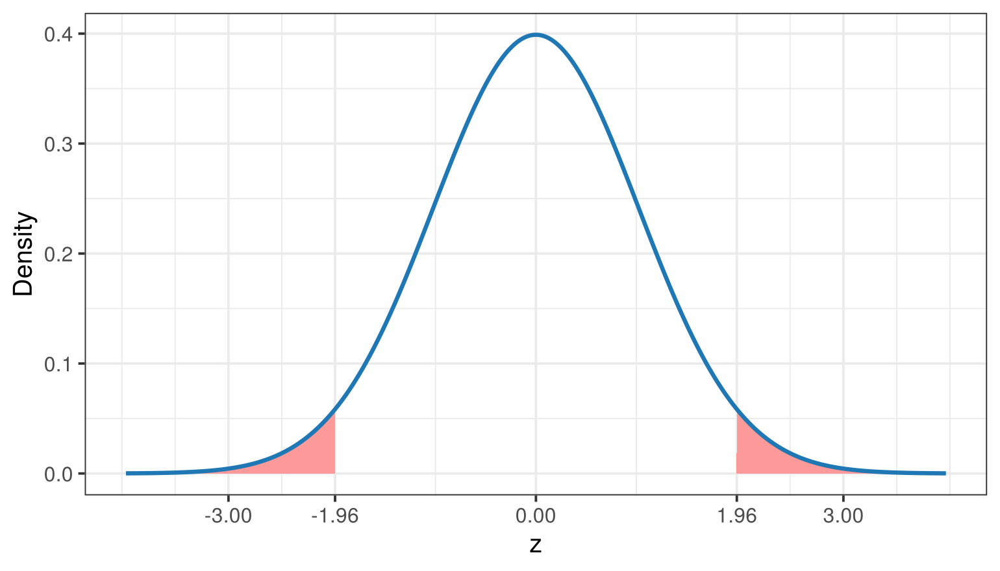
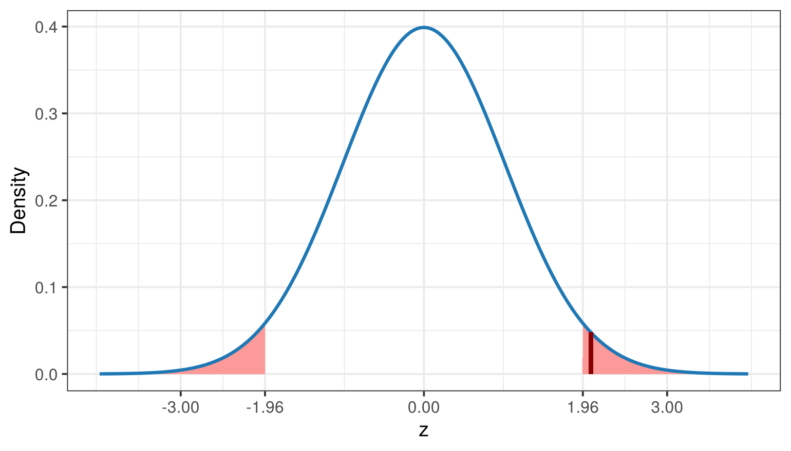
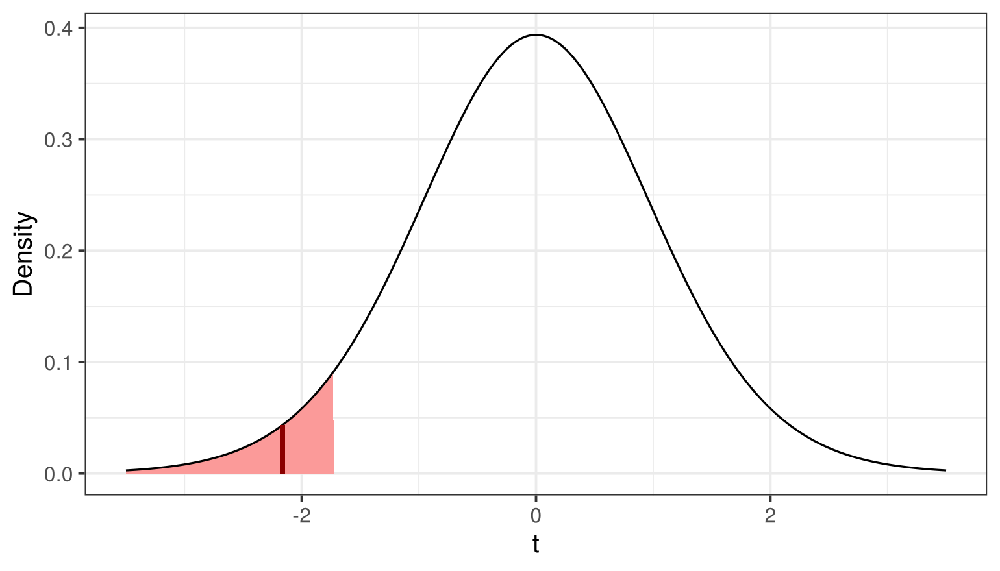
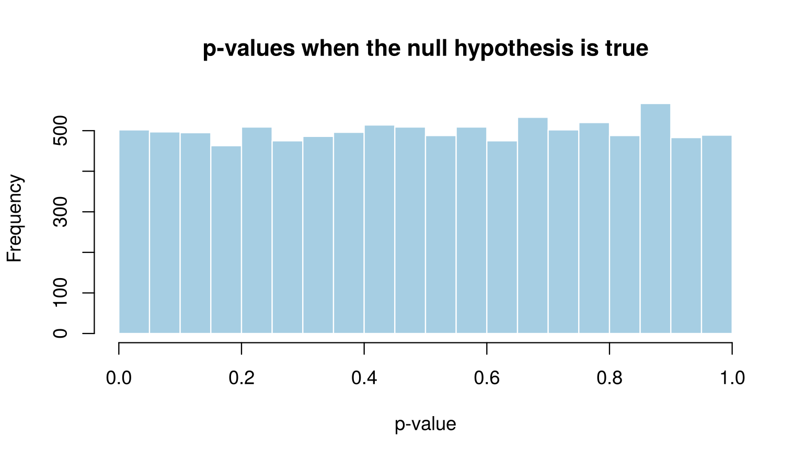

Session 7 of the course · Slides for this session
(PDF)
Learning goals. After this lesson you can
- state null and alternative hypotheses and draw the rejection region
of a test;
- compute a test statistic and a p-value by hand and check them with
R;
- explain, using a simulation, what the significance level \(\alpha\) controls.
The logic: how surprising is our sample?
A hypothesis test asks: if the null hypothesis were true, how
surprising would a result like ours be? We decide in advance what
counts as “too surprising”. That is the significance level \(\alpha\), and it defines the
rejection region of the test statistic.
For a two-sided z-test at \(\alpha =
0.05\), the rejection region is the outer 5% of the standard
normal distribution:
alpha <- 0.05
z_crit <- qnorm(1 - alpha / 2)
curve_data <- data.frame(x = seq(-4, 4, 0.01))
curve_data$y <- dnorm(curve_data$x)
p <- ggplot(curve_data, aes(x, y)) +
geom_area(data = subset(curve_data, x < -z_crit), fill = pal[5]) +
geom_area(data = subset(curve_data, x > z_crit), fill = pal[5]) +
geom_line(linewidth = 1, colour = pal[2]) +
scale_x_continuous(breaks = round(c(-3, -z_crit, 0, z_crit, 3), 2)) +
labs(x = "z", y = "Density")
p

A two-sided z-test, step by step
Suppose a population is normal with known standard deviation \(\sigma = 1\), and we test
\[H_0: \mu = 0 \qquad H_1: \mu \neq
0.\]
We draw a sample of \(n = 50\) (in
this simulation the true mean is in fact 0.2):
set.seed(132)
x <- rnorm(50, mean = 0.2, sd = 1)
By the central limit theorem, \((\bar{x} -
\mu_0)/(\sigma/\sqrt{n})\) follows a standard normal distribution
if \(H_0\) is true:
z <- (mean(x) - 0) / (1 / sqrt(50))
z
## [1] 2.059999
## [1] 1.959964
p + geom_segment(x = z, xend = z, y = 0, yend = dnorm(z),
colour = "darkred", linewidth = 1.2)

The test statistic lies in the rejection region, so we reject \(H_0\). The same decision follows from the
p-value, the probability under \(H_0\)
of a result at least as extreme as ours:
p_value <- 2 * pnorm(-abs(z))
p_value
## [1] 0.03939867
Because the test is two-sided, extreme results in either direction
count, and the tail probability is doubled. Using abs(z)
makes the formula work whether \(z\) is
positive or negative.
One-sided t-tests
When \(\sigma\) is unknown we use
the t distribution.
A left-sided test. A chocolate factory claims that
its bars weigh at least 40 grams on average. An inspector weighs a
random sample of 20 bars: \(\bar{x} =
38.5\), \(s = 3.1\).
\[H_0: \mu \ge 40 \qquad H_1: \mu <
40\]
t_stat <- (38.5 - 40) / (3.1 / sqrt(20))
t_crit <- qt(0.05, df = 19)
c(t = t_stat, critical = t_crit, p = pt(t_stat, df = 19))
## t critical p
## -2.16393675 -1.72913281 0.02170838
t_data <- data.frame(x = seq(-3.5, 3.5, 0.01))
t_data$y <- dt(t_data$x, df = 19)
ggplot(t_data, aes(x, y)) +
geom_area(data = subset(t_data, x < t_crit), fill = pal[5]) +
geom_line() +
geom_segment(x = t_stat, xend = t_stat, y = 0, yend = dt(t_stat, 19),
colour = "darkred", linewidth = 1.2) +
labs(x = "t", y = "Density")

The rejection region is in the left tail, because only small sample
means count as evidence against \(H_0\). The statistic falls inside it: we
reject \(H_0\).
A right-sided test. Now \(H_0: \mu \le 40\) versus \(H_1: \mu > 40\), with \(\bar{x} = 41\), \(s = 4\), \(n =
20\):
t_stat <- (41 - 40) / (4 / sqrt(20))
c(t = t_stat, critical = qt(0.95, df = 19), p = 1 - pt(t_stat, df = 19))
## t critical p
## 1.1180340 1.7291328 0.1387451
The statistic does not reach the critical value, so we do not reject
\(H_0\). Not rejecting is not the same
as showing that \(H_0\) is true: the
sample is simply not informative enough to rule it out.
Two kinds of error
A statistical decision is always made under uncertainty, so errors
are unavoidable. Suppose we test whether the average birth weight of
newborns in a hospital exceeds a reference value \(\mu_0\) (\(H_0:
\mu \le \mu_0\) versus \(H_1: \mu >
\mu_0\)). Whatever we decide, we can be wrong in one of two
ways:
| Reject \(H_0\) |
Type I error (false positive), probability \(\alpha\) |
Correct decision (true positive) |
| Do not reject \(H_0\) |
Correct decision (true negative) |
Type II error (false negative), probability \(\beta\) |
The significance level fixes the risk of a Type I error in advance.
The risk of a Type II error depends on the true effect and the sample
size; \(1 - \beta\) is the
power of the test.
What does the significance level control? A simulation
If \(H_0\) is true and we test at
\(\alpha = 0.05\), how often do we
wrongly reject it? We simulate 10,000 studies in which the null
hypothesis is true:
set.seed(1)
p_values <- replicate(10000, t.test(rnorm(30, mean = 0, sd = 1), mu = 0)$p.value)
mean(p_values < 0.05)
## [1] 0.0502
hist(p_values, breaks = 20, col = pal[1], border = "white",
main = "p-values when the null hypothesis is true", xlab = "p-value")

About 5% of the studies reject \(H_0\) even though it is true. These are
Type I errors, and \(\alpha\) is their long-run rate. The
histogram also shows something students rarely expect: when \(H_0\) is true, p-values are spread evenly
between 0 and 1.
Try it yourself
- Change the true mean in the last simulation from 0 to 0.3. What
proportion of studies now reject \(H_0\)? This proportion is the
power of the test.
- Repeat exercise 1 with samples of 10, 30 and 100. How does power
depend on the sample size?
- Imagine running 20 independent tests on data where every null
hypothesis is true. Using the simulation result, how many “significant”
results would you expect? What does this imply for studies that test
many outcomes?
LS0tCnRpdGxlOiAiSHlwb3RoZXNpcyB0ZXN0aW5nIgotLS0KCmBgYHtyIHNldHVwLCBpbmNsdWRlPUZBTFNFfQprbml0cjo6b3B0c19jaHVuayRzZXQoZWNobyA9IFRSVUUsIGZpZy53aWR0aCA9IDcsIGZpZy5oZWlnaHQgPSA0LCBkcGkgPSAxMTApCmxpYnJhcnkoZ2dwbG90MikKbGlicmFyeShSQ29sb3JCcmV3ZXIpCnBhbCA8LSBicmV3ZXIucGFsKDgsICJQYWlyZWQiKQp0aGVtZV9zZXQodGhlbWVfYncoYmFzZV9zaXplID0gMTMpKQpgYGAKCipTZXNzaW9uIDcgb2YgdGhlIFtjb3Vyc2VdKGluZGV4Lmh0bWwpIMK3IFtTbGlkZXMgZm9yIHRoaXMgc2Vzc2lvbiAoUERGKV0oc2xpZGVzLzA3LWh5cG90aGVzaXMtdGVzdGluZy5wZGYpKgoKKipMZWFybmluZyBnb2Fscy4qKiBBZnRlciB0aGlzIGxlc3NvbiB5b3UgY2FuCgotIHN0YXRlIG51bGwgYW5kIGFsdGVybmF0aXZlIGh5cG90aGVzZXMgYW5kIGRyYXcgdGhlIHJlamVjdGlvbiByZWdpb24gb2YgYSB0ZXN0OwotIGNvbXB1dGUgYSB0ZXN0IHN0YXRpc3RpYyBhbmQgYSBwLXZhbHVlIGJ5IGhhbmQgYW5kIGNoZWNrIHRoZW0gd2l0aCBSOwotIGV4cGxhaW4sIHVzaW5nIGEgc2ltdWxhdGlvbiwgd2hhdCB0aGUgc2lnbmlmaWNhbmNlIGxldmVsICRcYWxwaGEkIGNvbnRyb2xzLgoKIyMgVGhlIGxvZ2ljOiBob3cgc3VycHJpc2luZyBpcyBvdXIgc2FtcGxlPwoKQSBoeXBvdGhlc2lzIHRlc3QgYXNrczogKmlmIHRoZSBudWxsIGh5cG90aGVzaXMgd2VyZSB0cnVlLCBob3cgc3VycHJpc2luZyB3b3VsZAphIHJlc3VsdCBsaWtlIG91cnMgYmU/KiBXZSBkZWNpZGUgaW4gYWR2YW5jZSB3aGF0IGNvdW50cyBhcyAidG9vIHN1cnByaXNpbmciLgpUaGF0IGlzIHRoZSBzaWduaWZpY2FuY2UgbGV2ZWwgJFxhbHBoYSQsIGFuZCBpdCBkZWZpbmVzIHRoZSAqKnJlamVjdGlvbiByZWdpb24qKgpvZiB0aGUgdGVzdCBzdGF0aXN0aWMuCgpGb3IgYSB0d28tc2lkZWQgei10ZXN0IGF0ICRcYWxwaGEgPSAwLjA1JCwgdGhlIHJlamVjdGlvbiByZWdpb24gaXMgdGhlIG91dGVyIDUlCm9mIHRoZSBzdGFuZGFyZCBub3JtYWwgZGlzdHJpYnV0aW9uOgoKYGBge3IgcmVqZWN0aW9uLXJlZ2lvbn0KYWxwaGEgPC0gMC4wNQp6X2NyaXQgPC0gcW5vcm0oMSAtIGFscGhhIC8gMikKY3VydmVfZGF0YSA8LSBkYXRhLmZyYW1lKHggPSBzZXEoLTQsIDQsIDAuMDEpKQpjdXJ2ZV9kYXRhJHkgPC0gZG5vcm0oY3VydmVfZGF0YSR4KQoKcCA8LSBnZ3Bsb3QoY3VydmVfZGF0YSwgYWVzKHgsIHkpKSArCiAgZ2VvbV9hcmVhKGRhdGEgPSBzdWJzZXQoY3VydmVfZGF0YSwgeCA8IC16X2NyaXQpLCBmaWxsID0gcGFsWzVdKSArCiAgZ2VvbV9hcmVhKGRhdGEgPSBzdWJzZXQoY3VydmVfZGF0YSwgeCA+ICB6X2NyaXQpLCBmaWxsID0gcGFsWzVdKSArCiAgZ2VvbV9saW5lKGxpbmV3aWR0aCA9IDEsIGNvbG91ciA9IHBhbFsyXSkgKwogIHNjYWxlX3hfY29udGludW91cyhicmVha3MgPSByb3VuZChjKC0zLCAtel9jcml0LCAwLCB6X2NyaXQsIDMpLCAyKSkgKwogIGxhYnMoeCA9ICJ6IiwgeSA9ICJEZW5zaXR5IikKcApgYGAKCiMjIEEgdHdvLXNpZGVkIHotdGVzdCwgc3RlcCBieSBzdGVwCgpTdXBwb3NlIGEgcG9wdWxhdGlvbiBpcyBub3JtYWwgd2l0aCBrbm93biBzdGFuZGFyZCBkZXZpYXRpb24gJFxzaWdtYSA9IDEkLCBhbmQKd2UgdGVzdAoKJCRIXzA6IFxtdSA9IDAgXHFxdWFkIEhfMTogXG11IFxuZXEgMC4kJAoKV2UgZHJhdyBhIHNhbXBsZSBvZiAkbiA9IDUwJCAoaW4gdGhpcyBzaW11bGF0aW9uIHRoZSB0cnVlIG1lYW4gaXMgaW4gZmFjdCAwLjIpOgoKYGBge3Igei1zYW1wbGV9CnNldC5zZWVkKDEzMikKeCA8LSBybm9ybSg1MCwgbWVhbiA9IDAuMiwgc2QgPSAxKQpgYGAKCkJ5IHRoZSBjZW50cmFsIGxpbWl0IHRoZW9yZW0sICQoXGJhcnt4fSAtIFxtdV8wKS8oXHNpZ21hL1xzcXJ0e259KSQgZm9sbG93cyBhCnN0YW5kYXJkIG5vcm1hbCBkaXN0cmlidXRpb24gaWYgJEhfMCQgaXMgdHJ1ZToKCmBgYHtyIHotc3RhdH0KeiA8LSAobWVhbih4KSAtIDApIC8gKDEgLyBzcXJ0KDUwKSkKegp6X2NyaXQKYGBgCgpgYGB7ciB6LXBsb3R9CnAgKyBnZW9tX3NlZ21lbnQoeCA9IHosIHhlbmQgPSB6LCB5ID0gMCwgeWVuZCA9IGRub3JtKHopLAogICAgICAgICAgICAgICAgIGNvbG91ciA9ICJkYXJrcmVkIiwgbGluZXdpZHRoID0gMS4yKQpgYGAKClRoZSB0ZXN0IHN0YXRpc3RpYyBsaWVzIGluIHRoZSByZWplY3Rpb24gcmVnaW9uLCBzbyB3ZSByZWplY3QgJEhfMCQuIFRoZSBzYW1lCmRlY2lzaW9uIGZvbGxvd3MgZnJvbSB0aGUgcC12YWx1ZSwgdGhlIHByb2JhYmlsaXR5IHVuZGVyICRIXzAkIG9mIGEgcmVzdWx0IGF0CmxlYXN0IGFzIGV4dHJlbWUgYXMgb3VyczoKCmBgYHtyIHAtdmFsdWV9CnBfdmFsdWUgPC0gMiAqIHBub3JtKC1hYnMoeikpCnBfdmFsdWUKYGBgCgpCZWNhdXNlIHRoZSB0ZXN0IGlzIHR3by1zaWRlZCwgZXh0cmVtZSByZXN1bHRzIGluIGVpdGhlciBkaXJlY3Rpb24gY291bnQsIGFuZAp0aGUgdGFpbCBwcm9iYWJpbGl0eSBpcyBkb3VibGVkLiBVc2luZyBgYWJzKHopYCBtYWtlcyB0aGUgZm9ybXVsYSB3b3JrIHdoZXRoZXIKJHokIGlzIHBvc2l0aXZlIG9yIG5lZ2F0aXZlLgoKIyMgT25lLXNpZGVkIHQtdGVzdHMKCldoZW4gJFxzaWdtYSQgaXMgdW5rbm93biB3ZSB1c2UgdGhlIHQgZGlzdHJpYnV0aW9uLgoKKipBIGxlZnQtc2lkZWQgdGVzdC4qKiBBIGNob2NvbGF0ZSBmYWN0b3J5IGNsYWltcyB0aGF0IGl0cyBiYXJzIHdlaWdoIGF0IGxlYXN0CjQwIGdyYW1zIG9uIGF2ZXJhZ2UuIEFuIGluc3BlY3RvciB3ZWlnaHMgYSByYW5kb20gc2FtcGxlIG9mIDIwIGJhcnM6CiRcYmFye3h9ID0gMzguNSQsICRzID0gMy4xJC4KCiQkSF8wOiBcbXUgXGdlIDQwIFxxcXVhZCBIXzE6IFxtdSA8IDQwJCQKCmBgYHtyIGxlZnQtdGVzdH0KdF9zdGF0IDwtICgzOC41IC0gNDApIC8gKDMuMSAvIHNxcnQoMjApKQp0X2NyaXQgPC0gcXQoMC4wNSwgZGYgPSAxOSkKYyh0ID0gdF9zdGF0LCBjcml0aWNhbCA9IHRfY3JpdCwgcCA9IHB0KHRfc3RhdCwgZGYgPSAxOSkpCmBgYAoKYGBge3IgbGVmdC1wbG90fQp0X2RhdGEgPC0gZGF0YS5mcmFtZSh4ID0gc2VxKC0zLjUsIDMuNSwgMC4wMSkpCnRfZGF0YSR5IDwtIGR0KHRfZGF0YSR4LCBkZiA9IDE5KQpnZ3Bsb3QodF9kYXRhLCBhZXMoeCwgeSkpICsKICBnZW9tX2FyZWEoZGF0YSA9IHN1YnNldCh0X2RhdGEsIHggPCB0X2NyaXQpLCBmaWxsID0gcGFsWzVdKSArCiAgZ2VvbV9saW5lKCkgKwogIGdlb21fc2VnbWVudCh4ID0gdF9zdGF0LCB4ZW5kID0gdF9zdGF0LCB5ID0gMCwgeWVuZCA9IGR0KHRfc3RhdCwgMTkpLAogICAgICAgICAgICAgICBjb2xvdXIgPSAiZGFya3JlZCIsIGxpbmV3aWR0aCA9IDEuMikgKwogIGxhYnMoeCA9ICJ0IiwgeSA9ICJEZW5zaXR5IikKYGBgCgpUaGUgcmVqZWN0aW9uIHJlZ2lvbiBpcyBpbiB0aGUgbGVmdCB0YWlsLCBiZWNhdXNlIG9ubHkgc21hbGwgc2FtcGxlIG1lYW5zIGNvdW50CmFzIGV2aWRlbmNlIGFnYWluc3QgJEhfMCQuIFRoZSBzdGF0aXN0aWMgZmFsbHMgaW5zaWRlIGl0OiB3ZSByZWplY3QgJEhfMCQuCgoqKkEgcmlnaHQtc2lkZWQgdGVzdC4qKiBOb3cgJEhfMDogXG11IFxsZSA0MCQgdmVyc3VzICRIXzE6IFxtdSA+IDQwJCwgd2l0aAokXGJhcnt4fSA9IDQxJCwgJHMgPSA0JCwgJG4gPSAyMCQ6CgpgYGB7ciByaWdodC10ZXN0fQp0X3N0YXQgPC0gKDQxIC0gNDApIC8gKDQgLyBzcXJ0KDIwKSkKYyh0ID0gdF9zdGF0LCBjcml0aWNhbCA9IHF0KDAuOTUsIGRmID0gMTkpLCBwID0gMSAtIHB0KHRfc3RhdCwgZGYgPSAxOSkpCmBgYAoKVGhlIHN0YXRpc3RpYyBkb2VzIG5vdCByZWFjaCB0aGUgY3JpdGljYWwgdmFsdWUsIHNvIHdlIGRvIG5vdCByZWplY3QgJEhfMCQuCk5vdCByZWplY3RpbmcgaXMgbm90IHRoZSBzYW1lIGFzIHNob3dpbmcgdGhhdCAkSF8wJCBpcyB0cnVlOiB0aGUgc2FtcGxlIGlzCnNpbXBseSBub3QgaW5mb3JtYXRpdmUgZW5vdWdoIHRvIHJ1bGUgaXQgb3V0LgoKIyMgVHdvIGtpbmRzIG9mIGVycm9yCgpBIHN0YXRpc3RpY2FsIGRlY2lzaW9uIGlzIGFsd2F5cyBtYWRlIHVuZGVyIHVuY2VydGFpbnR5LCBzbyBlcnJvcnMgYXJlCnVuYXZvaWRhYmxlLiBTdXBwb3NlIHdlIHRlc3Qgd2hldGhlciB0aGUgYXZlcmFnZSBiaXJ0aCB3ZWlnaHQgb2YgbmV3Ym9ybnMgaW4gYQpob3NwaXRhbCBleGNlZWRzIGEgcmVmZXJlbmNlIHZhbHVlICRcbXVfMCQgKCRIXzA6IFxtdSBcbGUgXG11XzAkIHZlcnN1cwokSF8xOiBcbXUgPiBcbXVfMCQpLiBXaGF0ZXZlciB3ZSBkZWNpZGUsIHdlIGNhbiBiZSB3cm9uZyBpbiBvbmUgb2YgdHdvIHdheXM6Cgp8IHwgJEhfMCQgaXMgdHJ1ZSB8ICRIXzAkIGlzIGZhbHNlIHwKfC0tLXwtLS18LS0tfAp8ICoqUmVqZWN0ICRIXzAkKiogfCBUeXBlIEkgZXJyb3IgKGZhbHNlIHBvc2l0aXZlKSwgcHJvYmFiaWxpdHkgJFxhbHBoYSQgfCBDb3JyZWN0IGRlY2lzaW9uICh0cnVlIHBvc2l0aXZlKSB8CnwgKipEbyBub3QgcmVqZWN0ICRIXzAkKiogfCBDb3JyZWN0IGRlY2lzaW9uICh0cnVlIG5lZ2F0aXZlKSB8IFR5cGUgSUkgZXJyb3IgKGZhbHNlIG5lZ2F0aXZlKSwgcHJvYmFiaWxpdHkgJFxiZXRhJCB8CgpUaGUgc2lnbmlmaWNhbmNlIGxldmVsIGZpeGVzIHRoZSByaXNrIG9mIGEgVHlwZSBJIGVycm9yIGluIGFkdmFuY2UuIFRoZSByaXNrIG9mCmEgVHlwZSBJSSBlcnJvciBkZXBlbmRzIG9uIHRoZSB0cnVlIGVmZmVjdCBhbmQgdGhlIHNhbXBsZSBzaXplOyAkMSAtIFxiZXRhJCBpcwp0aGUgKipwb3dlcioqIG9mIHRoZSB0ZXN0LgoKIyMgV2hhdCBkb2VzIHRoZSBzaWduaWZpY2FuY2UgbGV2ZWwgY29udHJvbD8gQSBzaW11bGF0aW9uCgpJZiAkSF8wJCBpcyB0cnVlIGFuZCB3ZSB0ZXN0IGF0ICRcYWxwaGEgPSAwLjA1JCwgaG93IG9mdGVuIGRvIHdlIHdyb25nbHkgcmVqZWN0Cml0PyBXZSBzaW11bGF0ZSAxMCwwMDAgc3R1ZGllcyBpbiB3aGljaCB0aGUgbnVsbCBoeXBvdGhlc2lzIGlzIHRydWU6CgpgYGB7ciB0eXBlLTF9CnNldC5zZWVkKDEpCnBfdmFsdWVzIDwtIHJlcGxpY2F0ZSgxMDAwMCwgdC50ZXN0KHJub3JtKDMwLCBtZWFuID0gMCwgc2QgPSAxKSwgbXUgPSAwKSRwLnZhbHVlKQptZWFuKHBfdmFsdWVzIDwgMC4wNSkKaGlzdChwX3ZhbHVlcywgYnJlYWtzID0gMjAsIGNvbCA9IHBhbFsxXSwgYm9yZGVyID0gIndoaXRlIiwKICAgICBtYWluID0gInAtdmFsdWVzIHdoZW4gdGhlIG51bGwgaHlwb3RoZXNpcyBpcyB0cnVlIiwgeGxhYiA9ICJwLXZhbHVlIikKYGBgCgpBYm91dCA1JSBvZiB0aGUgc3R1ZGllcyByZWplY3QgJEhfMCQgZXZlbiB0aG91Z2ggaXQgaXMgdHJ1ZS4gVGhlc2UgYXJlICoqVHlwZSBJCmVycm9ycyoqLCBhbmQgJFxhbHBoYSQgaXMgdGhlaXIgbG9uZy1ydW4gcmF0ZS4gVGhlIGhpc3RvZ3JhbSBhbHNvIHNob3dzCnNvbWV0aGluZyBzdHVkZW50cyByYXJlbHkgZXhwZWN0OiB3aGVuICRIXzAkIGlzIHRydWUsIHAtdmFsdWVzIGFyZSBzcHJlYWQKZXZlbmx5IGJldHdlZW4gMCBhbmQgMS4KCiMjIFRyeSBpdCB5b3Vyc2VsZgoKMS4gQ2hhbmdlIHRoZSB0cnVlIG1lYW4gaW4gdGhlIGxhc3Qgc2ltdWxhdGlvbiBmcm9tIDAgdG8gMC4zLiBXaGF0IHByb3BvcnRpb24KICAgb2Ygc3R1ZGllcyBub3cgcmVqZWN0ICRIXzAkPyBUaGlzIHByb3BvcnRpb24gaXMgdGhlICoqcG93ZXIqKiBvZiB0aGUgdGVzdC4KMi4gUmVwZWF0IGV4ZXJjaXNlIDEgd2l0aCBzYW1wbGVzIG9mIDEwLCAzMCBhbmQgMTAwLiBIb3cgZG9lcyBwb3dlciBkZXBlbmQgb24KICAgdGhlIHNhbXBsZSBzaXplPwozLiBJbWFnaW5lIHJ1bm5pbmcgMjAgaW5kZXBlbmRlbnQgdGVzdHMgb24gZGF0YSB3aGVyZSBldmVyeSBudWxsIGh5cG90aGVzaXMgaXMKICAgdHJ1ZS4gVXNpbmcgdGhlIHNpbXVsYXRpb24gcmVzdWx0LCBob3cgbWFueSAic2lnbmlmaWNhbnQiIHJlc3VsdHMgd291bGQgeW91CiAgIGV4cGVjdD8gV2hhdCBkb2VzIHRoaXMgaW1wbHkgZm9yIHN0dWRpZXMgdGhhdCB0ZXN0IG1hbnkgb3V0Y29tZXM/Cg==
Jiayun Jin · Text and figures licensed under CC BY 4.0; code under the MIT License.